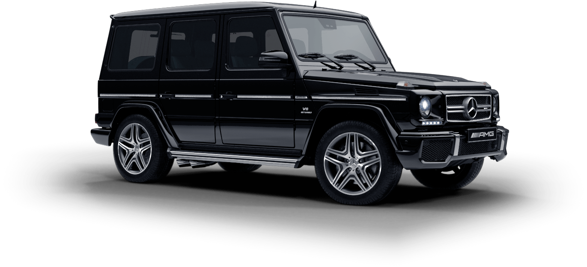

G klasse
De G-Klasse is ontwikkeld als een militair voertuig op suggestie van Mohammad Reza Pahlavi, de sjah van Iran, die destijds een belangrijke Mercedes-aandeelhouder was.[bron?] In 1979 verscheen ook een civiele versie. In zijn nu al ruim meer dan veertigjarige bestaan is het exterieur nauwelijks gewijzigd. Wel zijn de motoren constant vervangen en het interieur heeft in de loop der jaren steeds een opfrisbeurt gekregen. In 2009 kwam de G-Klasse 30th Edition op de markt, als bijzonder jubileummodel.